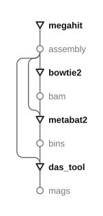
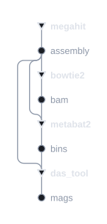
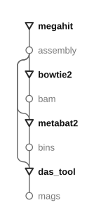
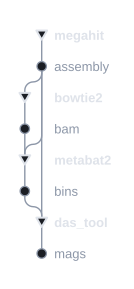

Benchmark arm E2 — nf‑core/mag's pipeline on CAMI, driven by
metasmith — drawn through the modes of DagRenderer. The
first panel is one arm’s full plan and the switch moves it, then how
the layout assigns its lanes; the third is both arms as bare step chains;
the last is the tool inventory over both.
The current style. Every node the plan builds, transforms and data alternating. E2 declares thirteen environments and a database as givens, so the first rows are resources before any read appears. This is the one panel that is a single run, so it is the one the arm switch moves.
A lane may be shared, but only by edges that agree on one end. A
bus shares its source and may branch, shedding a consumer at each row;
a funnel shares its target and may absorb but not branch. A lane whose
edges agree on neither cannot be read: follow it up from a consumer and it
arrives at two producers. e2::assembly feeds five consumers and
used to hold five parallel rails; it now holds one.




Bundling wins on that shape and loses on a bare fan-out, where four columns
read as one-feeding-four and one column reads as a chain. Which strategy wins
where is being worked case by case in the
lane-strategy panel;
the engine frozen at b7c2a2e8 stays runnable at
research/dagviz/baseline/ until that settles.
| panel | lanes | crossings |
|---|---|---|
| plain, short | 32 → 21 | 691 → 813 |
| plain, long | 28 → 19 | 564 → 664 |
| steps | 10 → 6 | 83 → 80 |
| legend | 59 → 33 | 2421 → 2341 |
| one solve, both arms | 23 → 13 | 219 → 281 |
Both arms with the data dropped — and the answer to whether they are the
same pipeline is yes. Under the substitution
fastp→chopper, megahit→flye,
bowtie2→minimap2, thirteen of each arm's fourteen private
edges map one‑to‑one onto the other's, and the two chains run the same
seven‑step tail in the same order. What is left over is one pendant node
each: the short arm hangs a fastqc_trimmed report off its trimmer,
the long arm puts a porechop_abi stage in front of its own.
fastqc_raw is the short arm's third extra — it reads only
givens and nothing consumes what it makes, so it connects to nothing at all.
| slot | short | long |
|---|---|---|
| adapter removal | — folded into fastp | porechop_abi |
| trim / filter | fastp | chopper |
| read QC report | fastqc_raw, fastqc_trimmed | — none |
| assembly | megahit | flye |
| read mapping | bowtie2_binning_bam | minimap2_binning_bam |
| binning | metabat2, semibin2, comebin — both arms | |
| refinement | das_tool — both arms | |
| bin quality | checkm2 — both arms | |
| truth | gold_standard — both arms | |
| scoring | amber — both arms | |
One detached block per transform, in a grid of identical boxes. Each block
is what the tool declares, not what a step bound it to — so
checkm2 is one block requiring e2::bin, whichever bin
set a run hands it. Over both arms it is the tool inventory: sixteen names,
megahit and flye among them.
A triangle is a transform, a hollow circle a data instance, a filled circle a target. The transform carries the weight and the data recedes: a plan is a sequence of things done, and the types are what they are done to. The layout puts one node per row and routes edges down lanes to its left, so height counts nodes and width counts how many edges are in flight.
The legend marks no targets. A block is a signature rather than a run, and an output that happens to be a target of this plan is still just an output of the transform, so every output there draws the same.
Only the plain drawing is coloured, on the module scheme: a hue
per dominator subtree. That says something across a whole plan and nothing
inside a three-node legend block or a bare chain of steps, so the other two
are monochrome.
The steps panel keeps the two arms apart on purpose. Both arms name their
binner output e2::comebin_bin, so a union keyed on type name folds
their tails into one — binners fed by both assemblers, a join neither arm
runs. Every computed type is fenced behind the arm that computed it and only the
givens stay shared, which is the truth: the arms read the same metadata, the same
references and the same tool environments, and compute nothing in common. The
isomorphism is in the shape of the two chains, not in shared nodes.
CheckM2 runs on the consolidated set only. DAS Tool's input is the three
binners' raw bins; those exist to be consolidated, so a CheckM2 row on one of them
describes an intermediate rather than a genome the pipeline reports. That removed
three steps per arm. It is a deliberate divergence from E1, which runs
postbinning_input = 'both' and therefore scores all four sets —
but that setting is there to keep the pinned binners present in nf‑core/mag's
downstream tables, since refined_bins_only empties every one of them.
Parity is DAS Tool against DAS Tool. The per-binner bins and
contig‑to‑bin tables are still built, because DAS Tool requires
them, so a per-binner pass stays available after the fact.
A data node is one per slot, not one per type. A given draws once per type, because its instance ids are per-sample and a 208-sample plan would otherwise put 208 circles where the plan means one input. Everything a step makes draws once per instance, because that id is the slot — structural, one per branch, and the same whether the plan carries one sample or two hundred.
One solve can carry both read shapes. Asked for a single
e2::comebin_bin — which names no assembler, requiring the generic
e2::assembly and a BAM descended from it — both arms reach it and
the solver returns nine steps with COMEBin instantiated once per arm. What defeats
the full target set is not the read shapes but a slot only one arm can fill:
e2::megahit_assembly, and the short-only FastQC and fastp reports.
So these two full plans stay two solves.
What the rule would not allow. The complaint that started it was that
megahit's assembly and the bowtie2 BAM take separate rails into
metabat2, and that the BAM should merge into metabat2's. It cannot:
the assembly's rail is a bus serving five consumers, and a bus may not absorb.
Nor can the assembly's edge move onto the BAM's rail — a funnel can only
form at or below its lowest source, and the assembly is made well above the BAM.
What the rule gives instead is that each of those two nodes now leaves on
one rail rather than five and three, which is where the width was.
Stating the rule found three ways the drawing was already lying. A rail was packed by whole rows although it occupies half a row past each end, so two unrelated rails that merely touched shared a lane and overlapped for a full row. A rail between neighbouring rows emitted its corner twice, which read as a zero-length sideways step and kinked the leg off true. And a sideways jog was banded by the direction it travelled rather than by which end it belonged to, so a rightward departure and a rightward arrival met at a point — a line you could follow from one step's producer into a different step's consumer. On 200 random DAGs, 77 drawings broke the rule before and none after.
Plan topology only. The givens here resolve against a copied pool and this worktree compiles its own library metadata, so the plan key is not E2's published one.